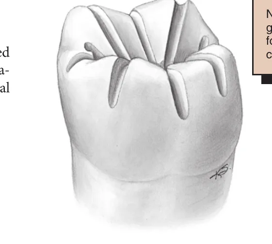

نسخه استخراجشده؛ ترجمه یا تأیید علمی انجام نشده است. وضعیت: captured
اعداد پایه — اینها را حفظ کن: «حداقل کلیرنس توصیهشده ۱ میلیمتر روی کاسپهای نانفانکشنال (نانسنتریک) و ۱٫۵ میلیمتر روی کاسپهای فانکشنال (سنتریک) است.» کاسپهای فانکشنال در مندیبل باکال و در ماگزیلا لینگوالاند.
و یک قاعدهی شکلی: «کاهش اکلوزال باید عموماً از کانتورهای آناتومیک طبیعی پیروی کند تا تا جای ممکن نسبت به ساختار دندان محافظهکارانه باشد.» و کاهش محوری باید موازی محور طولی دندان باشد ولی تیپر توصیهشدهی ۶ درجه را در نظر بگیرد.
و بِوِل کاسپ فانکشنال — چرا لازم است و با چه زاویهای: «چون کاهش بیشتری برای کاسپهای فانکشنال لازم است (تا حداقل ۱٫۵ میلیمتر کلیرنس اکلوزال فراهم شود)، بِوِل کاسپ فانکشنال باید مسطحتر از سطح خارجی دندان اصلی زاویهدار شود. در بیشتر دندانهای خلفی، بِوِل کاسپ فانکشنال با زاویهی تقریباً ۴۵ درجه نسبت به محور طولی دندان تراشیدهشده قرار میگیرد.»
و بِوِل کاسپ نانفانکشنال — عدد کمتر شناختهشده: «تراشهای روکش کامل باید از نظر کاهش کافی در زوایای خط اکلوزو-محوریِ کاسپهای نانفانکشنال ارزیابی شوند. در این محل، ضخامت فلز باید دستکم ۰٫۶ میلیمتر برای استحکام کافی باشد.»
و کاهش دوصفحهای باکال — یک تفاوت فک به فک: «مولرهای ماگزیلا بهویژه اغلب به کاهش اضافی در این ناحیه نیاز دارند. معمولاً نیمهی اکلوزالِ دیوارهی باکال کاهش مییابد تا موازی کانتور باکال اصلی دندان شود.» بدون این کاهش دوصفحهای، نتیجه یا ترمیمی بیش از حد نازک است یا — که محتملتر است — ترمیمی پرکانتور که از فرم آناتومیک طبیعی پیروی نمیکند.
و چرا در مندیبل اغلب لازم نیست: «چون پروفایل نسبتاً صاف یا کمی متمایل به لینگوال مولرهای مندیبل، اجازه میدهد ترمیمی ساخته شود که هم فرم آناتومیک خوبی دارد و هم حداقل الزامات ضخامت ماده را برآورده میکند.» و اگر روکش از زیرکونیای کانتور آناتومیک است، همهی زوایای خط را گرد کن، چون ابزار میلینگ نمیتواند زوایای داخلی تیز را شکل دهد.

ترتیب گذاشتن شیارهای عمق:
و اعداد عمق واقعی شیارها — که با اعداد کلیرنس فرق دارند: «برای رسیدن به عمق درست — ۰٫۸ میلیمتر برای شیار مرکزی و کاسپهای نانفانکشنال و ۱٫۳ میلیمتر برای کاسپهای فانکشنال (با در نظر گرفتن تقریباً ۰٫۲ میلیمتر برای پرداخت و صاف کردن) — کلینیسین باید ابعاد ابزارهایی که به کار میبرد را بداند.»
و یک توصیهی عملی که کمتر جدی گرفته میشود: «حفظ کردن قطر ابزارهای دوار به کلینیسین اجازه میدهد کفایت کاهش را حین تراش بهدرستی ارزیابی کند.» و اگر لازم شد، «یک پروب پریودنتال میتواند برای اندازهگیری وسعت کاهش به کار رود».
و جای درست شیارها از نظر مزیودیستالی: «شیار باید در نقطهی پایین و نقطهی بالای هر کاسپ گذاشته شود. نقاط پایین، شیارهای مرکزی و تکاملیاند؛ نقاط بالا، نوک کاسپها و تیغههای مثلثی.»
و زاویهی شیار، که بهآسانی اشتباه میشود: «روی کاسپ نانفانکشنال، شیارهای عمق موازی شیب کاسپی موردنظر قرار میگیرند؛ روی کاسپ فانکشنال، باید کمی مسطحتر زاویه بگیرند تا کلیرنس اضافی لازم به دست آید.»
و شرط کارآمدی شیار عمق: «شیارهای عمق تنها اگر دندان پیش از تراش در رابطهی اکلوزال خوبی باشد در هدایت کاهش اکلوزال کمککنندهاند.» اگر عملی نیست — مثلاً برای اصلاح سوپرا-رویش یا تعویض روکش موجود — «یک راهنمای کاهش میتواند از واکسآپ تشخیصی ساخته شود».
و آزمون موم — روش تأیید نهایی کلیرنس: